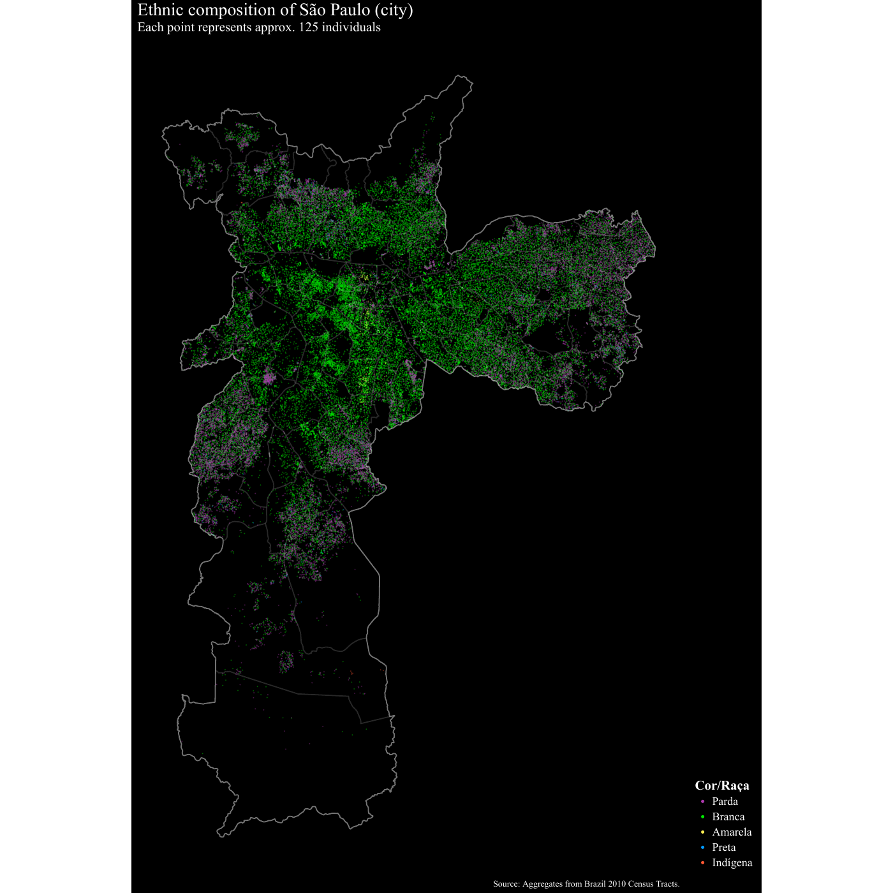
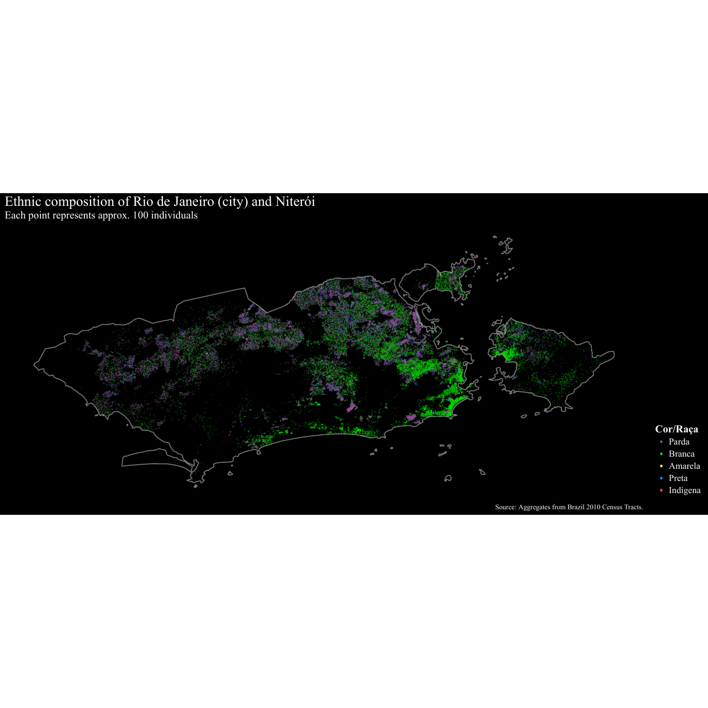
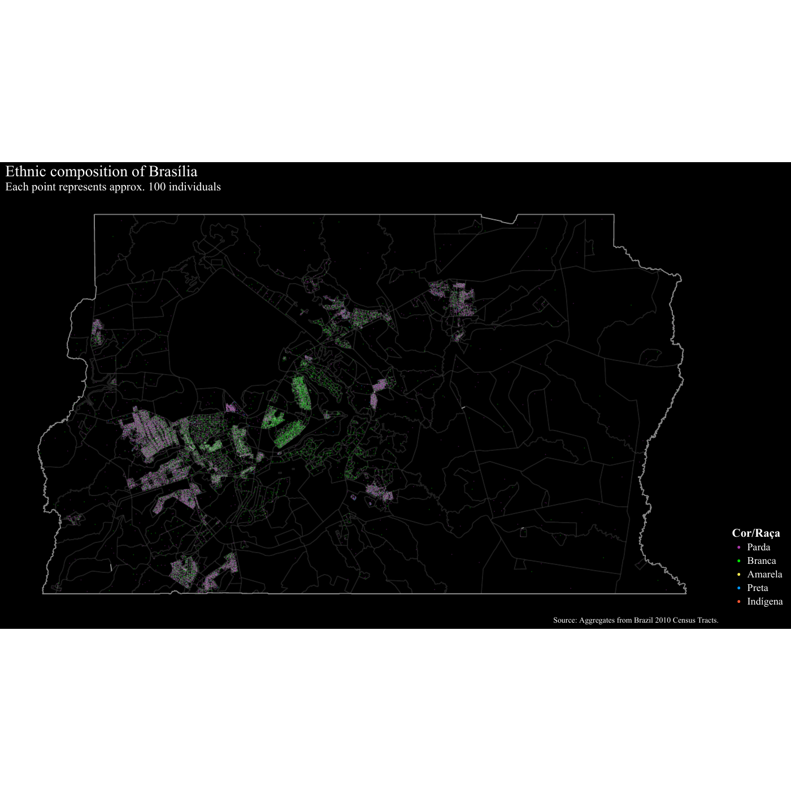
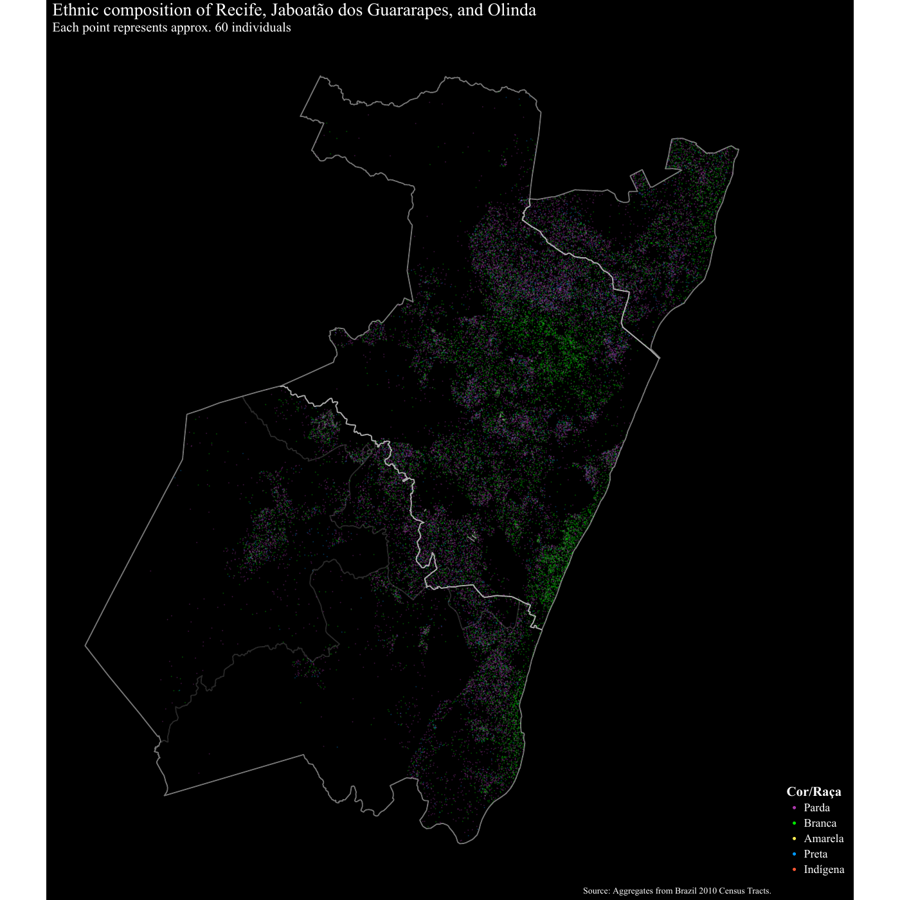
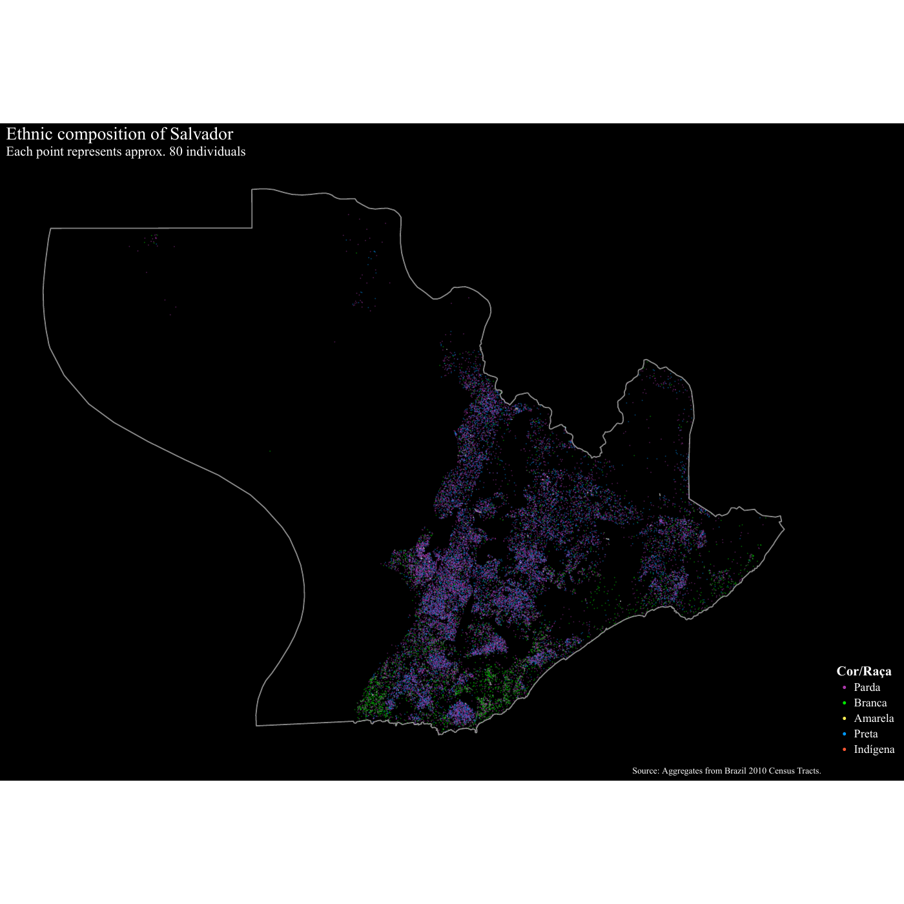
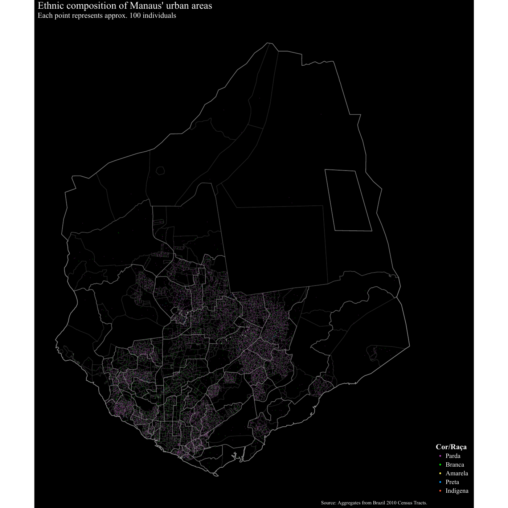

Você pode encontrar o código para as imagens deste post aqui.
Há algum tempo, eu encontrei este post, mostrando como as etnias se distribuem em Londres. Achei muito interessante, já que ele revela padrões sobre como as comunidades se organizam e como a deseigualdade se expressa através da localização dos domicílios.
Nossa tarefa de hoje é aplicar a mesma técnica no Brasil. Aqui está a nossa lista de cidades: São Paulo, Rio de Janeiro, Brasília, Recife, Salvador, e minha terra natal Manaus.
São Paulo

Rio de Janeiro

Brasília

Recife
Para produzir um mapa mais interessante, adicionei outros dois municípiios da região metropolitana de Recife: Jaboatão dos Guararapes e Olinda. 
Salvador

Manaus
Como a população de Manaus se concentra na área urbana, resolvi exibir apenas os gráficos destes setores censitários. 